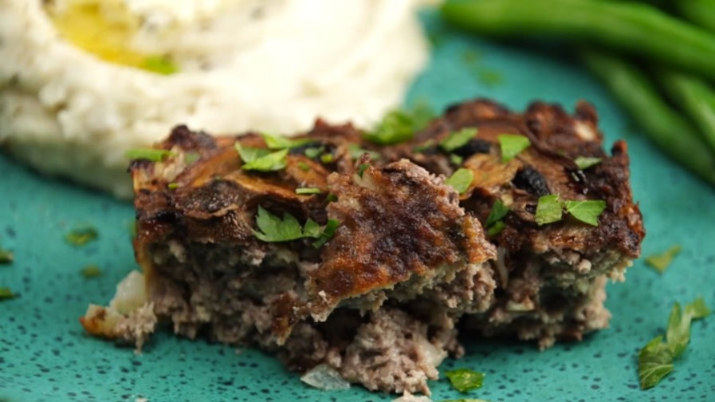

Air Fried Meatloaf

Description
This juicy air fried meatloaf is easy to make in a fraction of the time compared to cooking a meatloaf in the oven. Serve with your favorite sauce and mashed potatoes for a comforting meal.
Ingredients
- Beef
- Vegetables
- Egg
- Dry bread crumbs
- Seasonings
- Oil
Steps
- Preheat an air fryer to 392 degrees F (200 degrees C).
- Combine ground beef, onion, bread crumbs, thyme, egg, salt, and pepper in a bowl. Knead and mix thoroughly. Transfer mixture to a small loaf pan. Smooth the top, press in mushrooms, and coat with olive oil.
- Roast meatloaf in the preheated air fryer until nicely browned, about 25 minutes. An instant-read thermometer inserted into the center should read at least 165 degrees F (72 degrees C).
- Let meatloaf rest at least 10 minutes before slicing into wedges and serving.
Return